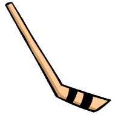

Legend |
|||||||||
< 99 total players |
100-499 total players |
500-999 total players |
1000-2999 total players |
> 3000 total players |
|||||
City produces |
City produces |
 |
City produces |
City produces |
NOTE: Zoom the map in more to see the sport icons line up with their correct city, or click them to learn more (pop-up)
NOTE 2: You can click on each state to learn more about how many players they produce total, by sport, and how they rank against the average of total player produced by state.
The above map shows the total professional athletes each state has produced all time. It is broken into five different categories as seen by the legend above. California had the most athletes produced while Alaska had the least amount of athletes. I gathered my data from sports-reference child sites Pro-Football Reference, Basketball Reference, Hockey Reference, and Baseball Reference. The compiled data can be seen here.